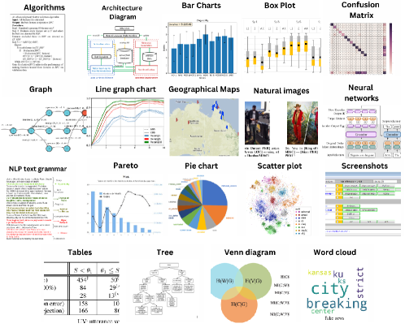
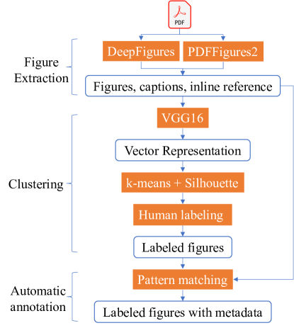
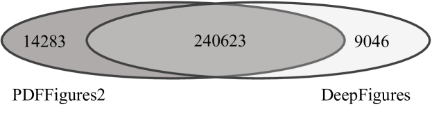
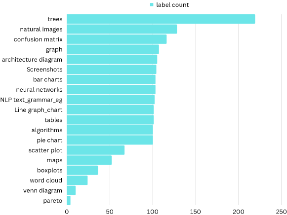

ACL-Fig: A Dataset for Scientific Figure Classification
Abstract
Most existing large-scale academic search engines are built to retrieve text-based information. However, there are no large-scale retrieval services for scientific figures and tables. One challenge for such services is understanding scientific figures’ semantics, such as their types and purposes. A key obstacle is the need for datasets containing annotated scientific figures and tables, which can then be used for classification, question-answering, and auto-captioning. Here, we develop a pipeline that extracts figures and tables from the scientific literature and a deep-learning-based framework that classifies scientific figures using visual features. Using this pipeline, we built the first large-scale automatically annotated corpus, ACL-Fig consisting of 112,052 scientific figures extracted from K research papers in the ACL Anthology. The ACL-Fig-pilot dataset contains 1,671 manually labeled scientific figures belonging to 19 categories. The dataset is accessible at https://huggingface.co/datasets/citeseerx/ACL-fig under a CC BY-NC license.
1 Introduction
Figures are ubiquitous in scientific papers illustrating experimental and analytical results. We refer to these figures as scientific figures to distinguish them from natural images, which usually contain richer colors and gradients. Scientific figures provide a compact way to present numerical and categorical data, often facilitating researchers in drawing insights and conclusions. Machine understanding of scientific figures can assist in developing effective retrieval systems from the hundreds of millions of scientific papers readily available on the Web [1]. The state-of-the-art machine learning models can parse captions and shallow semantics for specific categories of scientific figures. [2] However, the task of reliably classifying general scientific figures based on their visual features remains a challenge.

Here, we propose a pipeline to build categorized and contextualized scientific figure datasets. Applying the pipeline on 55,760 papers in the ACL Anthology (downloaded from https://aclanthology.org/ in mid-2021), we built two datasets: ACL-Fig and ACL-Fig-pilot. ACL-Fig consists of 112,052 scientific figures, their captions, inline references, and metadata. ACL-Fig-pilot (Figure 1) is a subset of unlabeled ACL-Fig, consisting of 1671 scientific figures, which were manually labeled into 19 categories. The ACL-Fig-pilot dataset was used as a benchmark for scientific figure classification. The pipeline is open-source and configurable, enabling others to expand the datasets from other scholarly datasets with pre-defined or new labels.
2 Related Work
Scientific Figures Extraction
Automatically extracting figures from scientific papers is essential for many downstream tasks, and many frameworks have been developed. A multi-entity extraction framework called PDFMEF incorporating a figure extraction module was proposed [3]. Shared tasks such as ImageCLEF [4] drew attention to compound figure detection and separation. [5] proposed a framework called PDFFigures that extracted figures and captions in research papers. The authors extended their work and built a more robust framework called PDFFigures2 [6]. DeepFigures was later proposed to incorporate deep neural network models [2].
Scientific Figure Classification
Scientific figure classification [7, 8] aids machines in understanding figures. Early work used a visual bag-of-words representation with a support vector machine classifier [7]. [9] applied hough transforms to recognize bar charts in document images. [10] used handcrafted features to classify charts in scientific documents. [11] combined convolutional neural networks (CNNs) and the deep belief networks, which showed improved performance compared with feature-based classifiers .
[b] Dataset Labels #Figures Image Source Deepchart 5 5,000 Web Image Figureseer1 5 30,600 Web Image Prasad et al. 5 653 Web Image Revision 10 2,000 Web Image FigureQA3 5 100,000 Synthetic figures DeepFigures 2 1,718,000 Scientific Papers DocFigure2 28 33,000 Scientific Papers ACL-Fig-pilot 19 1,671 Scientific Papers ACL-Fig (inferred)4 - 112,052 Scientific Papers
-
1
Only 1000 images are public.
-
2
Not publicly available.
-
3
Scientific-style synthesized data.
-
4
ACL-Fig-inferred does not contain human-assigned labels.
Figure classification Datasets
There are several existing datasets for figure classification such as DocFigure [12], FigureSeer [10], Revision [7], and datasets presented by [13] (Table 1). FigureQA is a public dataset that is similar to ours, consisting of over one million question-answer pairs grounded in over 100,000 synthesized scientific images [14] with five styles. Our dataset is different from FigureQA because the figures were directly extracted from research papers. Especially, the training data of DeepFigures are from arXiv and PubMed, labeled with only “figure” and “table”, and does not include fine-granular labels. Our dataset contains fine-granular labels, inline context, and is compiled from a different domain.

3 Data Mining Methodology
The ACL Anthology is a sizable, well-maintained PDF corpus with clean metadata covering papers in computational linguistics with freely available full-text. Previous work on figure classification used a set of pre-defined categories (e.g., [14], which may only cover some figure types. We use an unsupervised method to determine figure categories to overcome this limitation. After the category label is assigned, each figure is automatically annotated with metadata, captions, and inline references. The pipeline includes 3 steps: figure extraction, clustering, and automatic annotation (Figure 2).
3.1 Figure Extraction
To mitigate the potential bias of a single figure extractor, we extracted figures using pdffigures2 [6] and deepfigures [2] which work in different ways. PDFFigures2 first identifies captions and the body text because they are identified relatively accurately. Regions containing figures can then be located by identifying rectangular bounding boxes adjacent to captions that do not overlap with the body text. DeepFigures uses the distant supervised learning method to induce labels of figures from a large collection of scientific documents in LaTeX and XML format. The model is based on TensorBox, applying the Overfeat detection architecture to image embeddings generated using ResNet-101 [2]. We utilized the publicly available model weights111https://github.com/allenai/deepfigures-open trained on 4M induced figures and 1M induced tables for extraction. The model outputs the bounding boxes of figures and tables. Unless otherwise stated, we collectively refer to figures and tables together as “figures”. We used multi-processing to process PDFs. Each process extracts figures following the steps below. The system processed, on average, 200 papers per minute on a Linux server with 24 cores.
-
1.
Retrieve a paper identifier from the job queue.
-
2.
Pull the paper from the file system.
-
3.
Extract figures and captions from the paper.
-
4.
Crop the figures out of the rendered PDFs using detected bounding boxes.
-
5.
Save cropped figures in PNG format and the metadata in JSON format.
3.2 Clustering Methods
Next, we use an unsupervised method to label extracted figures automatically. We extract visual features using VGG16 [15], pretrained on ImageNet [16]. All input figures are scaled to a dimension of to be compatible with the input requirement of VGG16. The features were extracted from the second last hidden (dense) layer, consisting of 4096 features. Principal Component Analysis was adopted to reduce the dimension to 1000.
Next, we cluster figures represented by the 1000-dimension vectors using -means clustering. We compare two heuristic methods to determine the optimal number of clusters, including the Elbow method and the Silhouette Analysis [17]. The Elbow method examines the explained variation, a measure that quantifies the difference between the between-group variance to the total variance, as a function of the number of clusters. The pivot point (elbow) of the curve determines the number of clusters.
Silhouette Analysis determines the number of clusters by measuring the distance between clusters. It considers multiple factors such as variance, skewness, and high-low differences and is usually preferred to the Elbow method. The Silhouette plot displays how close each point in one cluster is to points in the neighboring clusters, allowing us to assess the cluster number visually.
3.3 Linking Figures to Metadata
This module associates figures to metadata, including captions, inline reference, figure type, figure boundary coordinates, caption boundary coordinates, and figure text (text appearing on figures, only available for results from PDFFigures2). The figure type is determined in the clustering step above. The inline references are obtained using GROBID (see below). The other metadata fields were output by figure extractors. PDFFigures2 and DeepFigures extract the same metadata fields except for “image text” and “regionless captions” (captions for which no figure regions were found), which are only available for results of PDFFigures2.
An inline reference is a text span that contains a reference to a figure or a table. Inline references can help to understand the relationship between text and the objects it refers to. After processing a paper, GROBID outputs a TEI file (a type of XML file), containing marked-up full-text and references. We locate inline references using regular expressions and extract the sentences containing reference marks.
4 Results
4.1 Figure Extraction

The numbers of figures extracted by PDFFigures2 and DeepFigures are illustrated in Figure 3, which indicates a significant overlap between figures extracted by two software packages. However, either package extracted () figures that were not extracted by the other package. By inspecting a random sample of figures extracted by either software package, we found that DeepFigures tended to miss cases in which two figures were vertically adjacent to each other. We took the union of all figures extracted by both software packages to build the ACL-Fig dataset, which contains a total of 263,952 figures. All images extracted are converted to 100 DPI using standard OpenCV libraries. The total size of the data is GB before compression. Inline references were extracted using GROBID. About 78% figures have inline references.
4.2 Automatic Figure Annotation
The extraction outputs 151,900 tables and 112,052 figures. Only the figures were clustered using the -means algorithm. We varied from 2 to 20 with an increment of 1 to determine the number of clusters. The results were analyzed using the Elbow method and Silhouette Analysis. No evident elbow was observed in the Elbow method curve. The Silhouette diagram, a plot of the number of clusters versus silhouette score exhibited a clear turning point at , where the score reached the global maximum. Therefore, we grouped the figures into 15 clusters.
To validate the clustering results, 100 figures randomly sampled from each cluster were visually inspected. During the inspection, we identified three new figure types: word cloud, pareto, and venn diagram. The ACL-Fig-pilot dataset was then built using all manually inspected figures. Two annotators manually labeled and inspected these clusters. The consensus rate was measured using Cohen’s Kappa coefficient, which was (substantial agreement) for the ACL-Fig-pilot dataset. For completeness, we added 100 randomly selected tables. Therefore, the ACL-Fig-pilot dataset contains a total of 1671 figures and tables labeled with 19 classes. The distribution of all classes is shown in Figure 4.

5 Supervised Scientific Figure Classification
Based on the ACL-Fig-pilot dataset, we train supervised classifiers. The dataset was split into a training and a test set (8:2 ratio). Three baseline models were investigated. Model 1 is a 3-Layer CNN, trained with a categorical cross-entropy loss function and the Adam optimizer. The model contains three typical convolutional layers, each followed by a max-pooling and a drop-out layer, and three fully-connected layers. The dimensions are reduced from to to . The last fully connected layer classifies the encoded vector into 19 classes. This classifier achieves an accuracy of 59%.
Model 2 was trained based on the VGG16 architecture ,except that the last three fully-connected layers in the original network were replaced by a long short-term memory layer, followed by dense layers for classification. This model achieved an accuracy of , 20% higher than Model 1.
Model 3 was the Vision Transformer (ViT) [18], in which a figure was split into fixed-size patches. Each patch was then linearly embedded, supplemented by position embeddings. The resulting sequence of vectors was fed to a standard Transformer encoder. The ViT model achieved the best performance, with 83% accuracy.
6 Conclusion
Based on the ACL Anthology papers, we designed a pipeline and used it to build a corpus of automatically labeled scientific figures with associated metadata and context information. This corpus, named ACL-Fig, consists of k objects, of which about 42% are figures and about 58% are tables. We also built ACL-Fig-pilot, a subset of ACL-Fig, consisting of 1671 scientific figures with 19 manually verified labels. Our dataset includes figures extracted from real-world data and contains more classes than existing datasets, e.g., DeepFigures and FigureQA.
One limitation of our pipeline is that it used VGG16 pre-trained on ImageNet. In the future, we will improve figure representation by retraining more sophisticated models, e.g., CoCa, [19], on scientific figures. Another limitation was that determining the number of clusters required visual inspection. We will consider density-based methods to fully automate the clustering module.
References
- [1] Madian Khabsa and C. Lee Giles. The number of scholarly documents on the public web. PLoS ONE, 9(5):e93949, May 2014.
- [2] Noah Siegel, Nicholas Lourie, Russell Power, and Waleed Ammar. Extracting scientific figures with distantly supervised neural networks. Proceedings of the 18th ACM/IEEE on JCDL, May 2018.
- [3] Jian Wu, Jason Killian, Huaiyu Yang, Kyle Williams, Sagnik Ray Choudhury, Suppawong Tuarob, Cornelia Caragea, and C. Lee Giles. Pdfmef: A multi-entity knowledge extraction framework for scholarly documents and semantic search. Proceedings of the 8th International Conference on Knowledge Capture, 2015.
- [4] Alba García Seco de Herrera, Henning Müller, and Stefano Bromuri. Overview of the imageclef 2015 medical classification task. In CLEF, 2015.
- [5] Christopher Clark and S. Divvala. Looking beyond text: Extracting figures, tables and captions from computer science papers. In AAAI Workshop: Scholarly Big Data, 2015.
- [6] Christopher Clark and S. Divvala. Pdffigures 2.0: Mining figures from research papers. 2016 IEEE/ACM Joint Conference on Digital Libraries (JCDL), pages 143–152, 2016.
- [7] M. Savva, Nicholas Kong, Arti Chhajta, Li Fei-Fei, Maneesh Agrawala, and J. Heer. Revision: automated classification, analysis and redesign of chart images. Proceedings of 24th annual ACM symposium on User interface software and tech, 2011.
- [8] Sagnik Ray Choudhury and C. Lee Giles. An architecture for information extraction from figures in digital libraries. Proceedings of the 24th International Conference on World Wide Web, 2015.
- [9] Y. Zhou and C. Tan. Hough technique for bar charts detection and recognition in document images. Proceedings 2000 International Conference on Image Processing (Cat. No.00CH37101), 2:605–608 vol.2, 2000.
- [10] Noah Siegel, Zachary Horvitz, Roie Levin, S. Divvala, and Ali Farhadi. Figureseer: Parsing result-figures in research papers. In ECCV, 2016.
- [11] Binbin Tang, Xiao Liu, Jie Lei, Mingli Song, Dapeng Tao, Shuifa Sun, and Fangmin Dong. Deepchart: Combining deep convolutional networks and deep belief networks in chart classification. Signal Processing, 124:156–161, 2016.
- [12] K. V. Jobin, Ajoy Mondal, and C. V. Jawahar. Docfigure: A dataset for scientific document figure classification. In 2019 International Conference on Document Analysis and Recognition Workshops (ICDARW), pages 74–79, 2019.
- [13] V. Karthikeyani and S. Nagarajan. Machine learning classification algorithms to recognize chart types in portable document format (pdf) files. International Journal of Computer Applications, 39:1–5, 2012.
- [14] Samira Ebrahimi Kahou, Vincent Michalski, Adam Atkinson, Akos Kadar, Adam Trischler, and Yoshua Bengio. Figureqa: An annotated figure dataset for visual reasoning, 2018.
- [15] Karen Simonyan and Andrew Zisserman. Very deep convolutional networks for large-scale image recognition. arXiv preprint arXiv:1409.1556, 2014.
- [16] Jia Deng, Wei Dong, Richard Socher, Li-Jia Li, Kai Li, and Li Fei-Fei. Imagenet: A large-scale hierarchical image database. In 2009 IEEE Conference on CVPR, pages 248–255, 2009.
- [17] Peter J. Rousseeuw. Silhouettes: A graphical aid to the interpretation and validation of cluster analysis. Journal of Computational and Applied Mathematics, 20:53–65, 1987.
- [18] Alexey Dosovitskiy, Lucas Beyer, Alexander Kolesnikov, Dirk Weissenborn, Xiaohua Zhai, Thomas Unterthiner, Mostafa Dehghani, Matthias Minderer, Georg Heigold, Sylvain Gelly, et al. An image is worth 16x16 words: Transformers for image recognition at scale. arXiv preprint arXiv:2010.11929, 2020.
- [19] Jiahui Yu, Zirui Wang, Vijay Vasudevan, Legg Yeung, Mojtaba Seyedhosseini, and Yonghui Wu. Coca: Contrastive captioners are image-text foundation models. CoRR, abs/2205.01917, 2022.